Город-на-селе
В самом центре Лондона стоит большое стеклянное яйцо. Лондонцы этим Яйцом очень гордятся и повсюду вставляют его изображения. Даже перед самым входом в Яйцо стоит такое же яйцо, только маленькое.
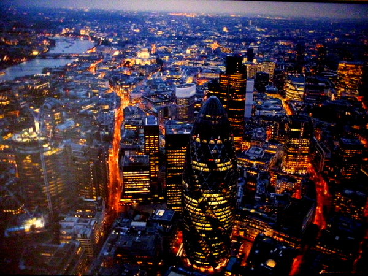
Нам с СергейАнатольичем выпала большая честь — жить под сенью Яйца. Ценник за это дерут такой, что всей зарплаты СергейАнатольича не хватило бы, чтобы оплатить месяц жизни в нашем гатэле. За что дерут — не совсем понятно, потому что в этом так называемом гатэле пока что даже не закончен ремонт. Похоже, это один из самых буржуйских районов: кроме гранитно-административных гробов и небоскрёбов-спутников Яйца там почти ничего и нет. Люди в этих местах не живут, а работают или толпятся по забегаловкам, а те, что живут — это в основном богатенькие студенты. Ну, так мне показалось.
И вот мы, значится, там жили. В местный бомонд мы не вписывались ну совсем. Я прекрасно понимаю того охранника на входе, который никак не мог меня запомнить и каждый раз допытывался, куда меня несёт. Ясен пень: нечего там делать с таким бомжовским видом. Поначалу меня это веселило, а потом надоело. Особенно погано тащить мешки с картошкой через толпу студенов в вечерих платьях, которым влом подвинуться (или они просто не догадываются, что так можно). Каждый раз выходишь из дому как из ... отеля, что ли. Такой я олдскульный тюфяк, короче. ;D
А вот с теми, кто там работал, было легко и просто. Пару раз мы неплохо поговорили с полькой-уборщицей (хотя меня не отпускало кошмарное чувство, что надо как-то ей помочь убирать хату). Строители тоже были люди как люди. На “ресэпшене” мне пару раз помогли отсканить паспорт. Да и студенты, чего там, не все одинаковые. Самые поганые — русские. Они думают, что никто не понимает русского мата, и поэтому орут на всю улицу. Особенно много и неестественно матерятся дэвушки. У нас так себя ведёт только отпитая синева, да ещё зелёная школота. В общем, злость берёт, что о русских судят по горстке богатеньких придурков.
Британцы много и весело пьянствуют, причём запой начинается с четверга. Пьют они толпой, сгрудившись на тротуаре вокруг какого-нибудь кабака. При этом все одновременно громко разговаривают, и шум стоит такой, что уши закладывает. Никто не валяется под забором.
***
Съехать мы собирались в воскресенье вечером. Воскресенье — это было 16-е, а у нас как раз на конверте было написано “до 16-го”. (Я, к слову сказать, думала, что там написано “до 17-го”, ну да ладно. :D) Раньше съезжать смысла не было: интернет в Кройдон ещё не провели.
Чемоданы паковать мы не спешили, потому как почти всё барахло я уже перетащила — остались только тряпки, комп и всякая мелочь. Что там паковать. :)
Поэтому утром в воскресенье мы встали с приятным чувством, что до вечера можно валять дурака и ковыряться в компе. Я не спеша со вкусом мыла голову, ходила в магаз и делала всякую еду. Встали мы не так уж поздно, и к полпервому всё было готово. Я наконец-то плотно засела в диван с СергейАнатольичем, компом и корытом салата. Надо сказать, салат был прекрасен. На него пошло лушее, что было в ближайшем магазе: огурцы, помидоры, зелёный лук, морковка, пекинская капуста, соль и немного чёрного перца — чтобы взбодриться с утра. (Кефира тут нет, и я ничем не заправляю — оказывается, так даже лучше, надо просто подобрать составляющие, чтоб они гасили друг друга.) И салат благоухал в своей миске и взывал на все лады.
Но стоило мне подхватить палками первый транш с намерением незамедлительно отправить его в рот, как в дверь постучали. Стук был негромкий, но совершенно однозначный. Бывает, знаете ли, такой вид стука: ещё ничего не случилось, но всё уже понятно. Так стучат в дверь только уборщицы в отелях — у них есть ключи от всех дверей, и стук для них — не больше чем простая формальность.
СергейАнтольич вспоролся открывать, а я так и осталась сидеть на месте, не донеся палки до рта. Мир рухнул. Что-то они там ещё говорили про выселение, про “до 12-и часов”, про “щас приедут новые жильцы” — слова проплывали, как в кошмарном сне. Вытаскивался на свет конверт с надписью “до 16-го”, звонили какие-то заместители заместителей, я даже помню, как в какой-то момент я выскочила вперёд, дико размахивая тарелкой с салатом и крича что-то про несобранные вещи и что “всё равно мы не съедем раньше, чем через два часа”. Всё напрасно. Ни в чём не виноватая бедняга уборщица была очень добра и обещала позвонить кому-то и вернуться через 10 минут.
Тянулись мгновения. Мы сидели на диване: СергейАнатольич, в холодном бешенстве подперев голову руками (а СергейАнатольич в холодном бешенстве — штука крайне редкая и абсолютно высаживающая мозг), и я, методично поедающая салат. А что? Мне просто хотелось есть. :)
Целых минут пять СергейАнатольич пребывал в жутком состоянии, и никакие попытки воспрять его дух не прокатывали. Мне даже стыдно стало, что я так вот просто сижу и ем. Потом он вдруг разом выкинул всё из головы, вычеркнул из души, вырубил топором и что там ещё, и — ура! — повеселел назад. В общем-то, к этому моменту мы уже как-то плюнули и забили на всё: выгоняют, и ладно. Нам дали на сборы полчаса, а через полчаса должна была вернуться тётя и начать убирать хату.
За полчаса мы всё собрали: рыбацкая сумка с тряпьём, чемодан-катун с компом, две сумки с ноутами и мелким железом и два пакета с едой и шампунями. С едой получилось глуповато: тащить час назад купленные бананы в Кройдон никто не планировал, но съесть их я уже не успевала. ;D
Мы уже собирались сматываться, как я вспомнила про обещаную фотоэкскурсию по хате. О-хо-хо! Вот это прокол. Я-то отложила её на самый отъезд, чтобы не пришлось убирать из кадра грязные носки и прочее. Да и вообще, мы там немного переставили мебель (собрали импровизированный стол в зале из мелких стеклянных тумб в спальне, забросили шесть ненужных подушек на шкаф и сварганили из банного полотенца сушилку для посуды), а перед отъездом планировали сделать всё “как было”. Так что всё равно пришлось бы слегка убираться, вот я думала, что зафоткаю всё в прилизанном виде, чтоб эстетизм не страдал. Но куда там. :) Что самое обидное, у меня были почти годные фотки, но я их все удалила в порыве эстетизма.
СергейАнатольич быстро откопал мне камеру, и я впопыхах сделала несколько протокольных фоток. Они отражают жалкость, сор и тлен. Вот, например, спальня: отвратительно смятая простыня, некрасиво повёрутый стул, блик на зелёной карте мира и гармошка занавески, из-за которой не видно окна — разве сделала бы я в здравом уме такую фотку? Кстати, карта мира заставила меня призадуматься: почему-то ои покрасили Америку в холодный зелёный, а Евразию — в болотный (переходящий в какой-то тёмно-бурый на Аравийском полуострове). По-настоящему зелёная там только Африка. Я размышляла над это картой не одно утро подряд. Кроме всего прочего, она ещё и висит несимметрично. :D
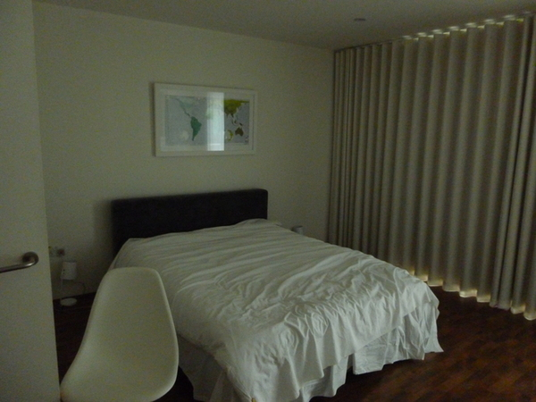
Это вот вид из окна в спальне. Вообще, окно широкое — во всю стену, но мы редко отодвигали занавеску больше, чем на треть (чтоб не торчать на виду в голом виде). Из окна виднеется внутренний двор отеля. Прямо под нами все эти два месяца шла непрерывная стройка (рыжеватые стропила крыши воздвигли за последнюю неделю).
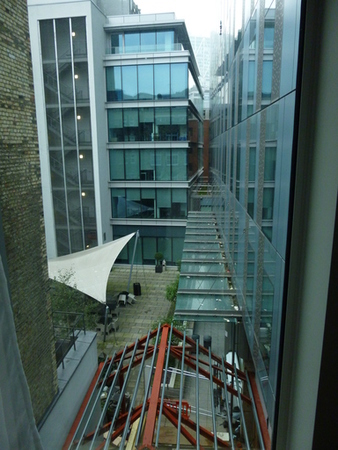
А вот две фотки, сделанные гораздо раньше, и потому более красивые. Это фотки из внутреннего двора. На первой почти видны наши окна (как раз заслоняются фикусом на переднем плане):
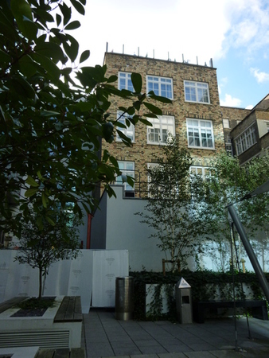
А на второй — фикус, обалденной красоты дерево, которое я когда-то пыталась вырубить на стене в спальне. Он прекрасен. Снизу весело торчат заросли мокрицы. ;)
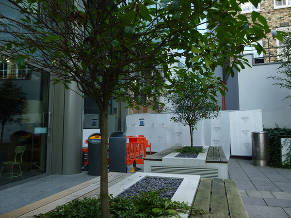
Возвращаюсь к спешному протоколированию спальни. Эту фотку скрасил своим присутствием СергейАнатольич. :) Обратите внимание на тумбу с выдвижными полками в дальнем углу (это та, на которую мы сгрудили за ненадобностью сотни подушек): некоторые ящики не закрыты. Это вовсе не халатность постояльцев, как можно подумать. Эти ящики мне закрыть попросту не под силу. Как-то раз я из принципа потратила на их закрывание минут 10: при малейшем нажатии на внешнюю панель ящик отскакивает, как ошпаренный. Впрочем, СергейАнтольич как-то умеет их закрывать, но у меня всё заканчивается пеной у рта и истеричным хохотом. :D
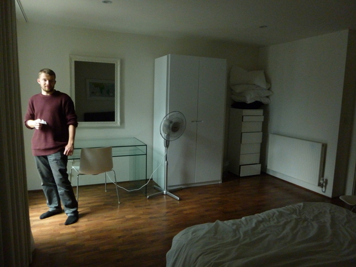
Это вот ванная. Стекляная дверь вместо занавески для душа — типичный писк британской моды. Как и все писки моды, это неудобно: вода через щель льётся на пол, не говоря уже о том, что от воды закрыта только треть. Впрочем, это не имеет значения: душ тут вмонтирован в стену, поэтому ни посидеть с душем на дне, ни походить из конца в конец ванны невозможно. Особо плохо, что нельзя помыть ванну. Зато унитаз квадратный, это я понимаю. :D
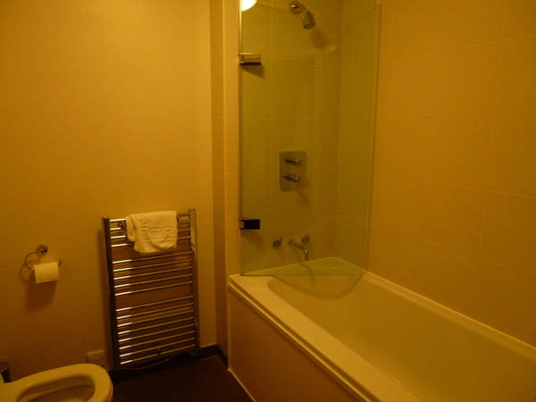
А вот единственная фотка зала. Единственная, потому что там была тётя-уборщица, и я не стала трепать ей нервы (и так ей с нами неповезло). На переднем плане — аккуратная уборщицкая тележка. За ней скрывается диван, на котором мы просиживали почти всё время, что там жили. Совсем уж за диваном на низкой тумбе угнездился невидимый отсюда салат, как-то разом скисший и пожухший. И даже аромат лука с перцем перешёл в какой-то невнятный кисловатый запашок.
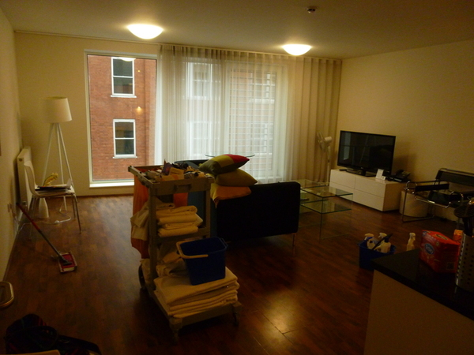
Так вот и ознаменовалось наше пребывание в отеле гибелью двух салатов: один погиб на въезде при неудачной попытке заправить его местным йогуртом вместо кефира, а другой — при выезде. :D
***
Без малейшей жалости мы отряхнули прах отеля с наших ног и направились в Кройдон. Тащить было нелегко, особенно СергейАнатольичу приходилось затаскивать чемодан с компом на всякие лестницы и ступеньки. Впрочем, как выяснилось, он и так каждый день помогал кому-то в метро затаскивать чемоданы на лестницу (на виктории один из больших вокзалов, и там всегда куча народу с сумками) — так что он сказал, что вполне натренировался. :D На этот раз было ещё радостное чувство, что это последний рейд. Меня уже порядком поддостало курсирование между Кройдоном и отелем со всякими кастрюлями и вешалками для белья.
А было, между прочим, воскресенье. Хорошие люди британцы, но поезда по воскресеньям у них ходят, мягко говоря, не очень. В общем, пришлось нам добираться не как обычно — прямым рейсом с виктории — а на перекладных. Но в конце получилось не так уж и плохо: проехались в вагоне с большим худым собакой-хаски. Он царственно лежал в проходе, позволяя людям гладить себя по шерстяному загривку и пробираться мимо, и по негромкому “come!” своего хозяина-негра мигом вытянулся по струнке и пошёл пить воду.
К концу дороги мы были похожи на двух надутых сычей-тяжеловозов.
***
Одно из преимуществ долгосрочного отмывания хат от застарелой грязи — успеваешь привыкнуть. В доме, где ты облазил с мыльной тряпкой и ржавой мочалкой каждый квадратный сантиметр, невозможно чувствовать себя неуютно. Достаточно подумать о том, что не надо больше заниматься этим дурацким отмыванием — и сразу так хорошо просто сидеть на диване. :D Кроме того, я эту хату теперь знаю лучше, чем кто-либо: нет тут такого места в щелях между кухонными шкафами или в хитросплетениях труб под раковиной, куда мне не пришлось бы засунуться в попытках соскоблить присохшее дерьмецо или перекрыть какой-нибудь вентиль.
Прямо отсюда, с дивана, я могу детально описать расположение и размеры скрытой дыры в фанерной перегородке за стиралкой, в которую уходят два шланга: узкий короткий шланг подачи холодной воды и широкий, ребристый шланг слива, перетянутый каким-то коленцем, после которого он на пару миллиметров расширятся. Я насквозь вижу коробку розетки над плитой: скрывающийся за блестящей крышкой мусорок и недовинченный болт, на котором у меня сломалась дешёвая отвёртка. Мне ведомо, что находится внутри колпака-вытяжки, как раковина в ванной крепится к стене, чем пахнут остатки еды, застрявшие во внутренностях духовки и многое, многое другое. :D
Все эти мелкие, бесценные и почти бесполезные подробности исключают саму возможность того, что эта хата может показаться мне чужой. Пожалуй, мог бы показаться чужим новый холодильник “Logik” — слижком уж он новый — но с холодильниками меня связывает глубокое духовное родство.
Кстати, с ним вышла весёлая история. Я вообще не планировала покупать новый холодильник — тут уже был один, но потом я его открыла и чуть не задохнулась от чёрных вонючих грибов. Под влиянием грибов я тут же решила, что отмывать их — не царское дело, тем более что холодильник был безобразно маленький и кто-то перепутал местами морозилку с холодилкой.
Бодрыми шагами я отправилась в единственный известный мне магаз бытовой техники — примерно в получасе ходьбы от отеля. За день до этого я уже провела там несколько часов, выбирая пылесос (пропылесосила им пол-этажа в тщетных попытках понять, какой лучше) — так что мне там были “всегда рады”. Вообще, в первый раз они косились на меня слегка подозрительно — ну совсем у меня неплатежеспособный вид — но после пылесоса потеплели, и только удивлялись, откуда я беру деньги (а потом удивлялись, что у меня есть муж — они-то думали, мне 15 :). Я бродила между холодильниками и недоумевала, зачем у половины из них спереди на двери кран. Как мне потом объяснили, в холодильнике есть специальный отсек, куда надо наливать пиво, а потом “такой типа подошёл к холодильнику и прямо из двери налил себе охлаждённого пива”. Кажись, мой смех их малость смутил. :D
Короче, выбрала я самый простой и большой холодильник с привлекательным названием “Logik” и договорилась о доставке. Доставлять-то его должны были в Кройдоново, а жили мы тогда в отеле. Пришлось мне в день доставки ехать с самого утра в Кройдон и там сидеть (ну и ладно, там как раз было что делать). Полдня прошло — нет холодильно-мэнов. Уже стемнело — всё равно не звонят (и не пишут). С горя я пошла в магаз через дорогу за отвёртками. Смотрю — катится по обочине машина с холодильниками. Я им в окно помахала чеком, а они мне кааак обрадовались. Оно и понятно: гуглокарты наш адрес отображают неправильно (промахиваются на добрый километр), а телефон у них то-ли сел, то-ли не ловил, то-ли ещё что. В общем, так всё хорошо закончилось. :)
***
Ну, а теперь самое классное: сказ о том, как СергейАнатольич уезжает в рассвет.
Происходит это примерно так: мы встаём утром, малость сидим за компом и собираемся на электричку в 09:39. Вообще, электрички тут — не совсем электрички, а настоящие поезда (у нас в Минске есть одна такая, коротенькая, правда). Ходят они каждые полчаса (и это только с самой ближней станции, а с той, что на пять минут дальше — ещё чаще). Кроме того, поезд идёт всего с тремя остановками (третья из которых — конечная) и покрывает расстояние около 20 километров за 20-25 минут. Не то чтобы это как-то особо быстро, но на некоторых виражах он разгоняется будь здоров — только и мелькают в окне станции, на которых он не тормозит.
В общем, опоздать на электричку тут не такая уж и беда, но сама по себе электричка как-то дисциплинирует. Идти до станции минут 10 минут (7 быстрым шагом) и всё время под гору. Солнце встаёт из-за моста.
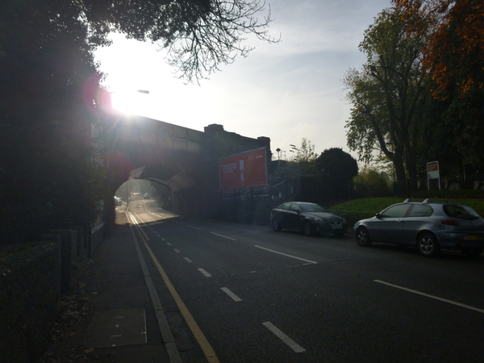
По этому мосту проходит другая ветка поездов, с которой тоже можно попасть на викторию. На рыжей рекламе справа изображён голый человек, цепляющийся за подоконник — реклама тут дурацкая, мутная, хотя иногда и красивая. :D
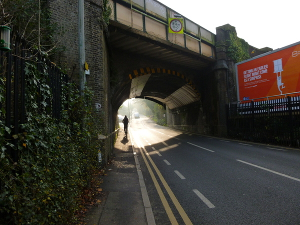
Мост.
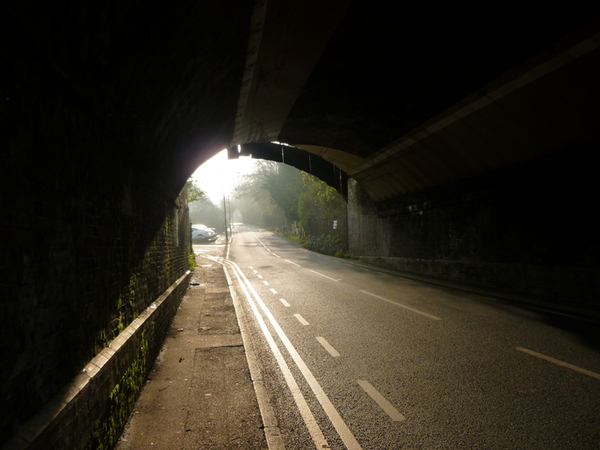
Какой-то зелёный холм за деревянным забором.
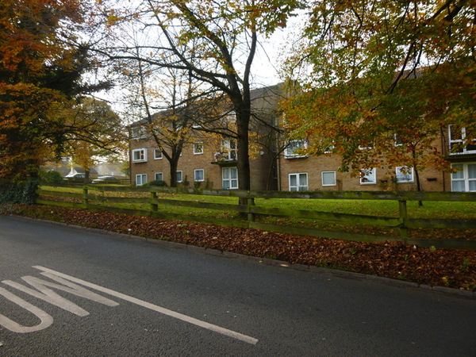
Дерево с недурственными листьями. :D
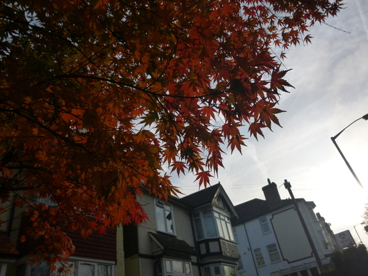
Дорога на солнце.
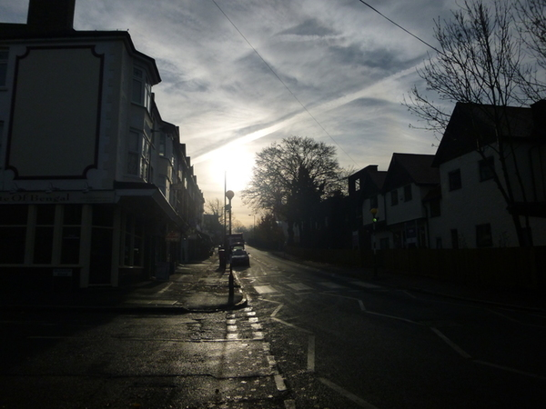
Вот и всё, слева поворот на Сандерстед. Куда-то дальше в солнце уходит, видимо, дорога на край мира. Впрочем, вчера я видела, как оттуда идут люди на станцию — так что может там и не край. ;D
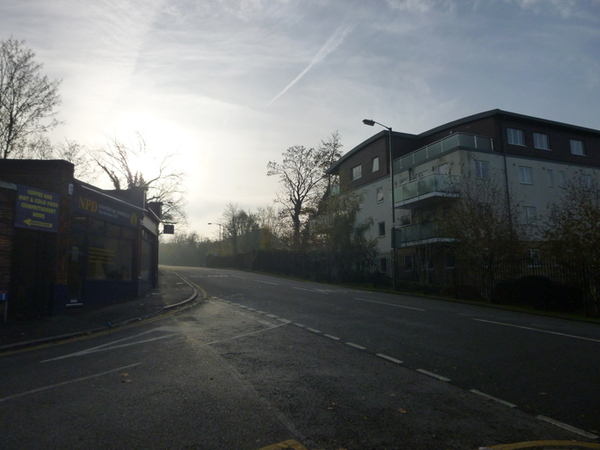
А вот наш Сандерстед:
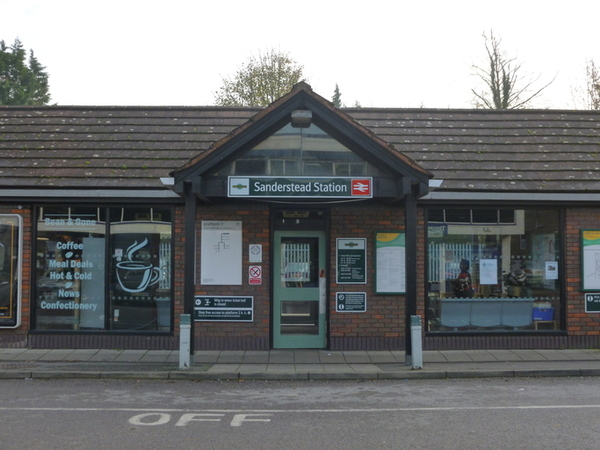
Это чудо-дом, где сидит тётя, продающая билеты. У них там стоит несколько шкафов и ящиков с книгами — хочешь, заплати копейку и выбери себе любую книгу. Многие так и делают. :)
Ещё там, конечно же, есть всякие кофе-с-рогаликами, автоматы с кока-колой, детские игрушки, бесплатные расписания на поезд и два табло с поездами: одно — для Сандерстеда, второе — для Purley Oaks, другой станции поблизости. Можно прийти, присмотреть поезд на Пурли и махнуть туда за пять минут.
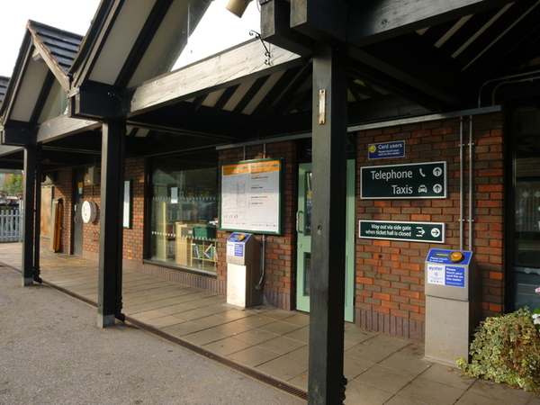
Сандерстед — маленькая станция, и тут всего два пути. Вдалеке виднеется железный мост. Поезда на Лондон идут с первой платформы (то бишь с этой), а на Ист Гринстед — со второй, поэтому вечером я по этому мосту перехожу на другую сторону и жду там.
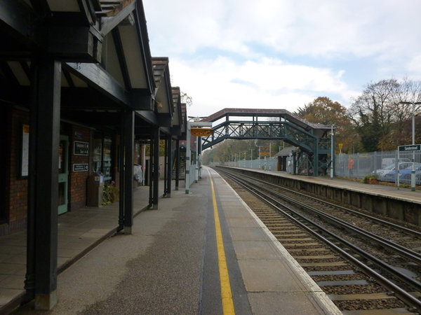
На станции беспрестанно что-нибудь объявляют.
Поезда объявляют прохладным женским голосом — в голове всплыает высокая, худощавая девушка 30 лет в строгом костюме, сероглазая, с прямым носом, улыбается редко, но добрая внутри:
“This is the Southern service to East Grinstead, calling at Riddlesdown, Upper Warlingham, Woldingham, Oxted, Hurst Green, Lingfield, Dormans and East Grinsted. Due to short platforms customers for Lingfield should join the first four coaches. Customers for Dormans should join the first nine coaches.”
... и т.д. и т.п. Впрочем, раз на раз не приходится, и то и дело они сбиваются на обычного напомаженного мужика, который наверняка одно время снимался в рекламе крема от морщин в каком-нибудь орифлэйме. Не, может зря я так — может он и хороший мужик, просто кривляется много — а в трудную минуту готов проставить тебе хоть ящик помады.
Иногда вступает совсем другой голос: полудетский, тихий, безнадёжно-неофициальный, и голова сразу представляет очень маленькую, но бесконечно прекрасную кореянку, японку, арабку — возможно даже в хиджабе:
“Your attention, customers. This is a security announcement... Please report any suspicious bags or behavior at the station. Than-kyou!”
Причём “Thank you!” произосится с каким-то даже печальным задором, с чисто восходящей интонацией вместо положенной ровной или восходяще-нисходящей — так что я начинаю сомневаться в наличии хиджаба.
Когда нет никаких поездов, объявляют что-нибудь ещё. В поездах так вообще умудряются раз пять за перегон между станциями объявить что-нибудь, пару раз автоответчиком, а иногда начинается поток сознания в микрофон (с заметным акцентом и характерными паузами между мыслями), и тут уж всё ограничивается только фантазией кондкутора: кто соревнуется в скороговорках, перечисляя названия станций, кто принимается вспоминать все станции, до которых можно добраться с какой-нибудь развязки, кто советует подойти к двери пассажирам, собирающимся выходить — но в конце каждого предложения обязательно приговаривается “Mind the gap!” — это у них что-то типа “конец связи”. Некоторым этого кажется мало, и они говорят: “Please mind the very large gap between the train and the station!!!”. Я специально высунулась посмотреть — такой ли большой гэп, как говорят — так он был почти незаметный. :D
А это вид в другую сторону от моста, на юг. Оттуда приедет поезд на Лондон.
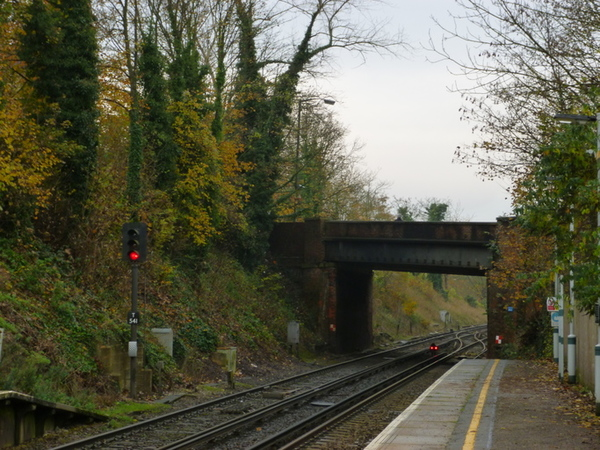
***
СергейАнатольич уехал, и я плетусь домой. Дорога назад выглядит совсем по-другому: это уже не дорога на солнце, а какое-то шествие по зелёным загородям и кустам.
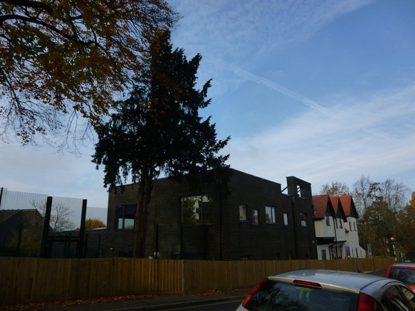
Надпись на указателе почти не видна, но я думаю, что там написано “Purley Oaks Station”, а красное пятно сбоку — значок “британская чыгунка”. Вдалеке виднеется даль (а вовсе не кусты в тумане). Вообще, эта фотка сделана с сильным зумом, поэтому кажется, что небо серое. А на самом деле должно складываться впечатление, что это не кусты в тумане, а горы.
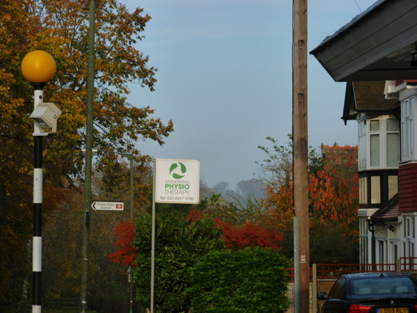
Клоссоп-роуд, а как же! Немного замусолился, но что сделаешь.
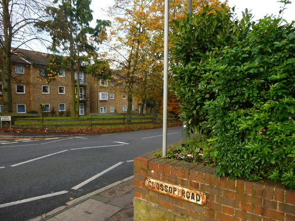
Краснозвёздное дерево теперь выглядит куда более красным и менее звёздным.
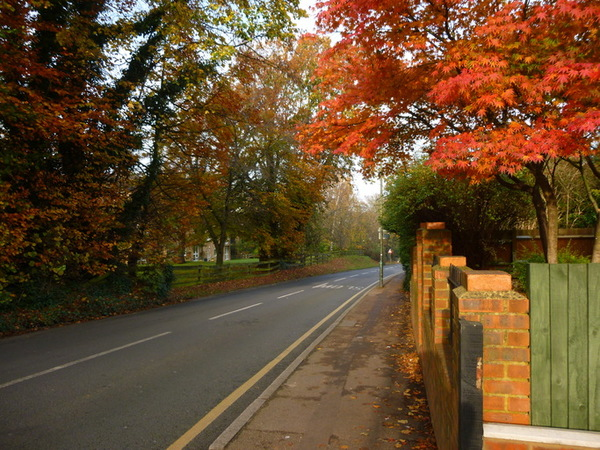
А вот вам, пожалуйста, как его... эвкалипт, что ли? Ну в общем то, что рисуют на западных открытках к рождеству. Его тут повсюду есть. :)
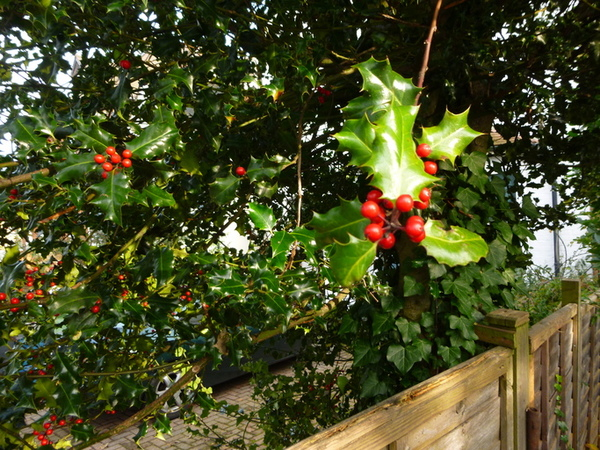
Мост тоже совсем другой. Окружает теперь его всякая зелень пушистая.
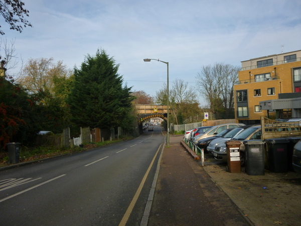
Выхожу из-под моста. Вдалеке виднеется город.
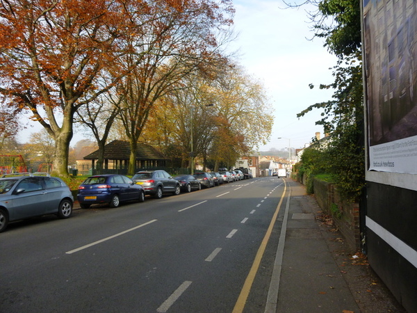
Вообще, к этому моменту мне надо было уже повернуть на боковую дорогу влево (Purley Road она называется), которая через пару домов привела бы меня к нашей дороге — Brighton Road. Но если продолжать идти прямо от станции (это по Sanderstead Road, стало быть), то всё равно упрёшься в брайтон-роуд, потому что эти три дороги образуют треугольник. Если принять пурли-роуд за основание, то я держу курс на нос треугольника (там магаз с едой).
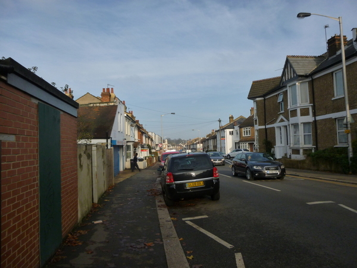
Британцы — люди суровые, и с кирпичами шуток не любят. Британский кирпич — это вам не хухры-мухры. :D
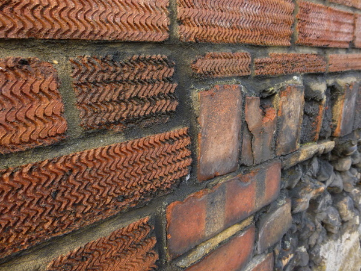
Цистерны хорошие (или канистры, как там их).
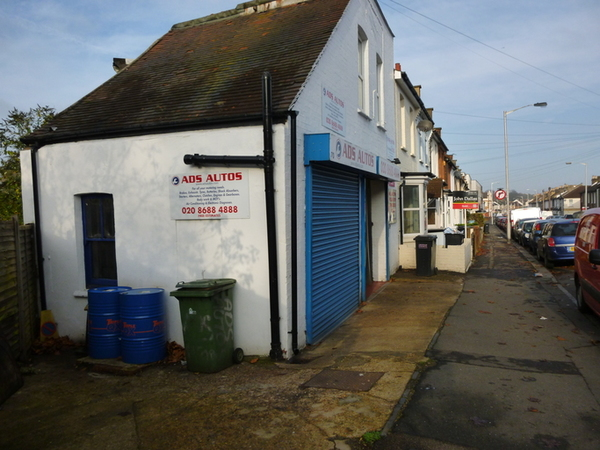
Топология “звезда” из книжек про компьютерные сети тут понимается буквально. Это ещё не самая звёздная звезда — бывает что с одной стороны провода натянуты сильнее, как будто жильцы хотят перетянуть интернет на себя. Кстати, наш провайдер — БТ (British Telecommunications), так что “смотреть БТ” тут не такое уж и ругательство. ;)
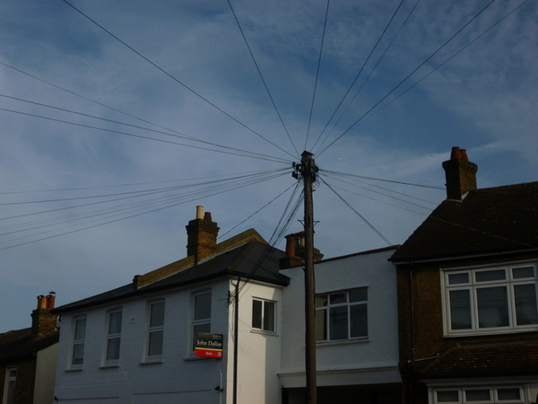
Голубой дом.
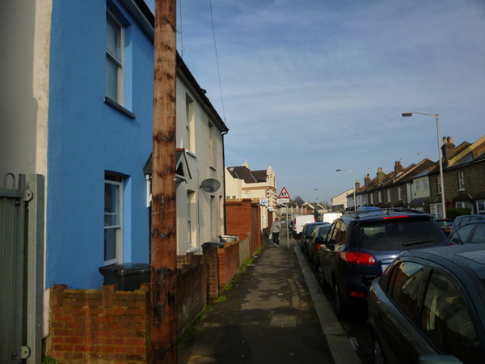
Школа указывает треугольником в небо. Кстати, почему на значке “школа” всегда девочка старше мальчика?
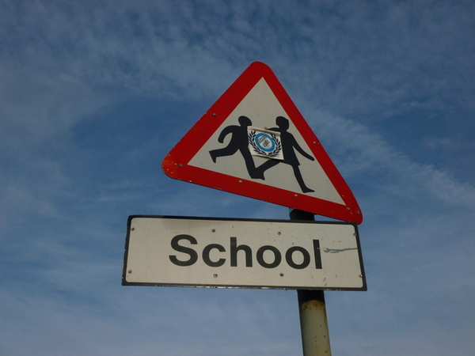
Ну вот я и дошла до носа треугольника. Отсюда видать Кройдоново-Восточное: это в сторону центра Лондона, и там всякое веселье и небоскрёбы. Через милю по этой дороге начинаются забегаловки, а через две — невообразимое скопление гипермаркетов с тряпьём, так что центр Лондона и рядом не валялся. А я щас развернусь и пойду в сторону дома.
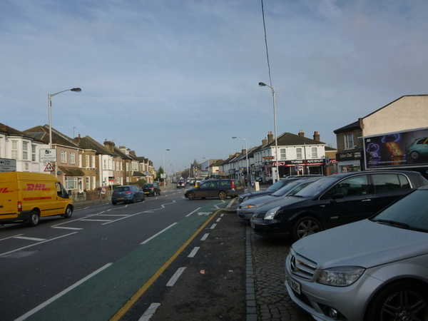
У нас в Кройдонове-Южном почти нет магазов с тряпьём, зато на каждом шагу — заправки и мастерские. Так-то, мы не какие-нибудь сопляки! :D
Небо над Лондоном — это небо самолётов. Если вы задрали голову и не увидели самолёт — проверьте, не идёт ли часом дождь. :)
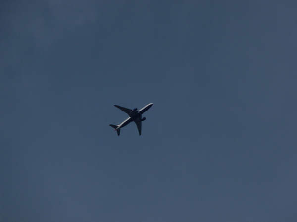
День и ночь реют они на просторе, гордые и неподвластные всякой ерунде.
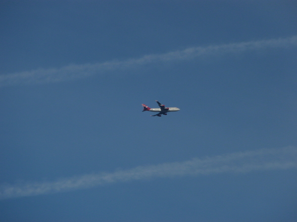
Этот самолёт особенно неподвластен:
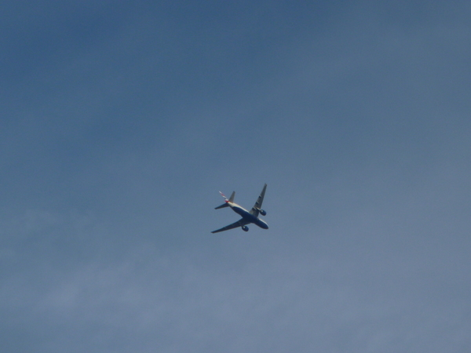
Тем временем я уже дошла до мусорного прохода. Это проход между домами, ведущий во внутренний двор с мусорными баками и парковкой. Ночью он не освещается, и можно попасть ногой в лужу или кучу гнилых листьев, поэтому молодец тот, кто выкидывает мусор с утра. ;D
Вообще, никогда бы не подумала, что там есть какой-то проход между домами.
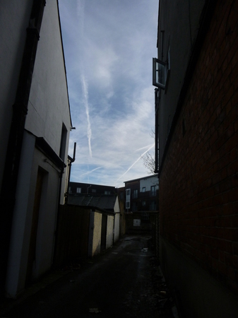
А вот и наш дом. Мы живём над коралом — очень легко запомнить. А то, говоря по правде, я каждый раз задумываюсь и с разгону прохожу мимо. :D
Сверху над нами живёт девушка Сара (это в том окне, которое торчит из неба).
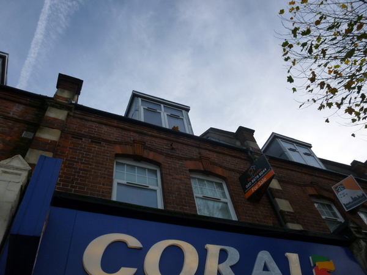
Вот, собственно, дверь в подъезд. 315A Brighton Road, хаты 1, 2, 3 и 4 (наша — 4-я). Дверь хорошая. В ней отражается заправка прямо через дорогу. Слоган этой запраки — “Passion for performance”, прям как в маркетинговом отделе какой-нибудь программистской конторы.
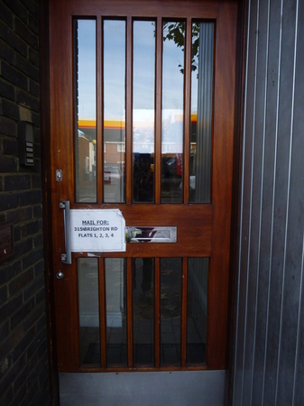
Да, дверь хорошая, но не оптимизирована, чтоб в неё заходить: в открытом состоянии она занимает всё место, и чтоб разминуться с СергейАнатольичем, мне приходится втягивать пузо и подбирать подбродки. :D
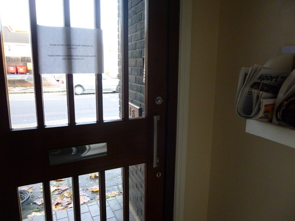
При этом в горб врезается полка для почты:
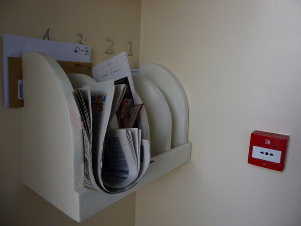
Почта тут — один из трёх основных видов связи (два других — интернет и телефон). Причём почта — основной. Постоянно валятся письма: оплата того-сего; какие-то дурацкие услуги; фирма, у которой я купила холодильник, пристаёт с предложениями отдать им сто фунтов “за протекцию”; полиция рассылает весёлые письма с описаниями квартирных краж в нашем районе; я уж не говорю о газетах и общем спаме. Половина писем приходит на имя прошлых и позапрошлых жильцов. Даже модем нам прислали посылкой и забросили прямо в щель для писем.
С трудом отрывая взгляд от разбросанных по полу конвертов, поднимаешь глаза — и вот он, узкий и тернистый путь к звёздам. Ну ладно, не совсем он тернистый — оббит ковром с ног до головы, но коридор к этому моменту успевает сузиться до ширины среднего холодильика. Чтобы подняться по нему с двумя сумками, надо нести их на полусогнутых руках впереди себя (отчего вся картина приобретает сходство с ритуальным подношением даров).
Против ожиданий, не так это и трудно — ступеньки приятно пружинят под ногами, и если даже неповезёт споткнуться и зарыться мордой в ковёр — ничего плохого не случится. :D
Да, и кстати лампочка героически автовключается, как только открываешь дверь. Это вам не какие-нибудь отсталые белорусские подъезды. :D
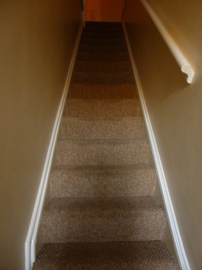
Взлетев, отдуваясь и пыхтя, как горный козёл, на ступеньки, утыкаешься лбом в стену. Слева и справа — две двери, наша — слева (то есть справа, если стоять лицом к лестнице). А ведь девушке Саре было бы ещё идти и идти. :D
Меня всё время тянет посмотреть что там, за поворотом — но пока до этого дело не дошло. Судя по нарастающему рыжему сиянию — не меньше, чем горные тропы и звёздные вершины.
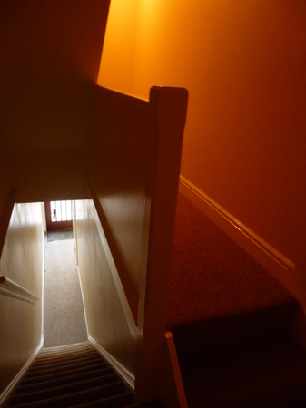
Заползаю в хату. Входная дверь, хотя и не прозрачная, как дверь в подъезд — но открывается с такого же полоборота. Она видна на фотке. Напротив двери — окно, радиатор и лапти. Впереди — путь в кухню (которую СергейАнатольич называет залом — сказывается разница в интересах ;).
Обратите внимание на могучую лестницу — это те же две ступеньки, которые в правом нижнем углу прошлой фотки ведут в рыжее сияние. Ковёр доползает до верха ступенек, но там иссякает и переходит в паркет.
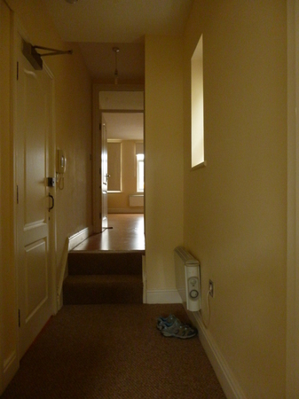
Отступаю на подготовленные позиции, там у нас спальня. В углу — рыбацкая сумка с северным лицом. За ней — дверь в стенной шкаф, в котором гордо висит зелёный свитер СергейАнатольича. На двери шкафа — вешалка. Это не та, которую мне подарила мама (ту перевезти было сложновато), но такая же. :)
Зеркало повесила я, чтоб было где прыщи давить. Надо сказать, место для зеркала выбрано специфичное: напротив окна, против света и слишком высоко — так что прыщам повезло. А почему я его там повесила, сложно сказать... Вроде как ввернул в задумчивости в стену шуруп, и всё.
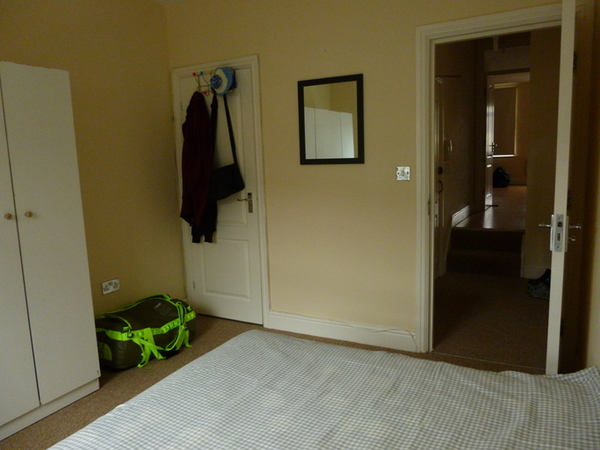
Вот спальня, вид из двери.
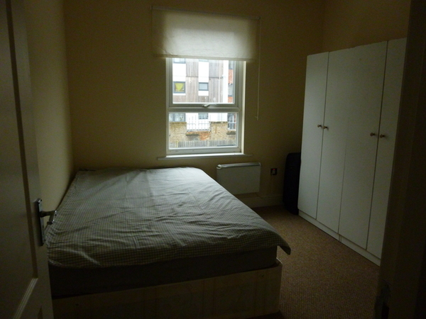
Если выставиться в окно, то слева там так:
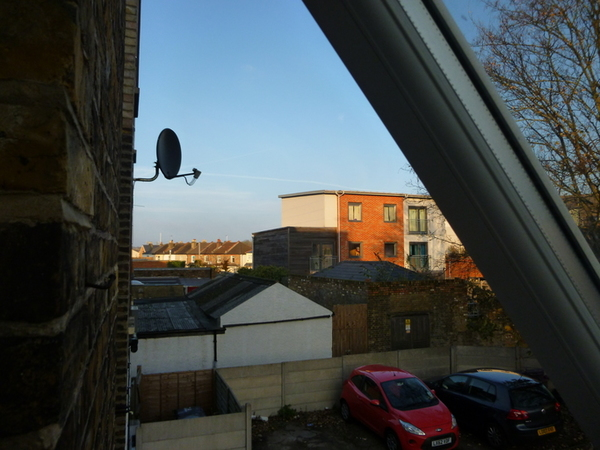
(Вид в сторону пресловутого центра.)
А справа так:
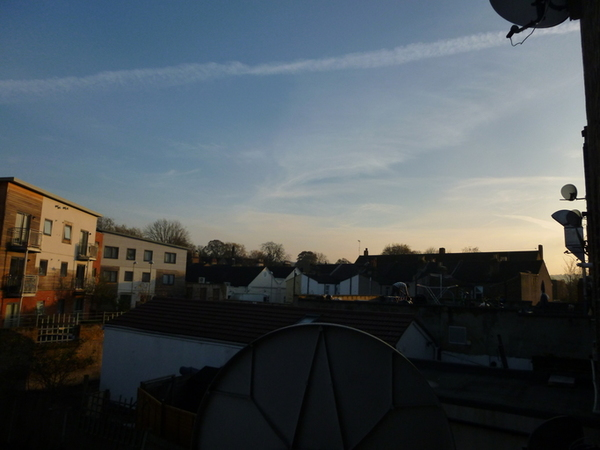
(Вид в сторону Сандерстеда.)
Ну а посередине — Великая Кройдонская Лужа, в одном из своих самых пересохших состояний. Обычно она разливается на полдвора.
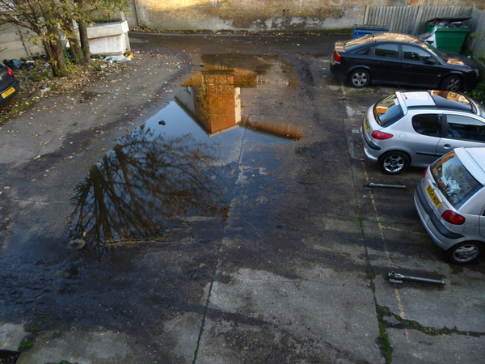
Лезу назад. В шкафу стоит пылесос. Он у меня беспроводной, с двумя литий-ионными батареями, примерно на час работы каждый. Я вообще не фанат беспроводной бытовой техники (подоткнул и пусть работает), но с пылесосами всё не так. Я их и вообще терперть не могу (меня от них безбожно электризует), а тут хотя бы не перетыкать из розетки в розетку. Не было б ковра — не было б и пылесоса. Мой дух всё равно был и останется грязным!
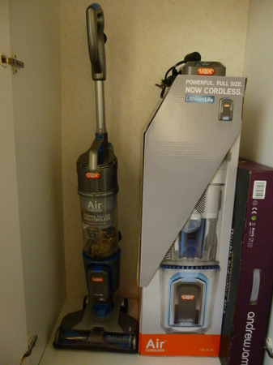
А вот и старый друг — рыбацкая сумка. Бывают такие вещи — подходят они тебе, и всё тут. На ней написано “The North Face” — серверное лицо.
Между спальней и входной дверью угнездилась бойлерная. Она занимает вторую половину места, отхапанного стенным шкафом в спальне. Бойлер, собственно, вот:
А это рубильники. Кто-то их аккуратно подписал, хороший видимо человек.
Прямо напротив входной двери — окно в коридоре.
Из него видать окно в ванной (ближнее, а дальнее — это наверное ванная в соседнем подъезде):
А таким был бы мир глазами пьяницы, валяющегося под дверью: неприступная лестница и далёкое сияние.
Для тех, кто-таки преодолел лестницу, открывается вид на ванную:
Вот пресловутое окно, из которого теперь видать окно в коридоре:
Вообще, окно в ванной — это по-царски, а если ещё это окно как раз над ванной, то и вовсе можно выпускать пар, не отодвигая занавеску. И разговаривать с людьми во дворе.
Душ пришлось поставить новый: старый был поломан. Отсюда видна дурацкая красная кнопка на кране (справа) — так вот она в старом кране залипла. :)
Кран тоже новый: старый был маленький.
Отступаю из коридора в кухню (она же зал).
На диване мы проводим свои лучшие дни, а я так и вообще почти всё время. :D
Диван новый, маленький и просиженный. Его нам привезли взамен на старый, потому что старый был просиженный. А новый что-то за неделю просиделся не хуже старого, причём на моей половине заметно сильнее, чем на СергейАнатольичевской. :)
А вот собственно кухня. Она хорошая, намного удобнее кухни в отеле, хотя и меньше.
Это моя чудо-сушилка для посуды. Снизу — пробковый ковёр для ванны, а сзади, под доской — почти незаметный костыль-полено, которое призвано придать сушилке правильный угол.
В этот шкаф приходится лезть целиком, чтобы откруть шланг от стиралки (а без этого стиралку невозможно выдвинуть ни на сантиметр). Так что я вполне понимаю, почему за ней было так грязно. ;)
Серый шланг, который выписывает элегантное коленце на фотке — это вовсе не тот, о которм я говорю (так что про сантиметр — не враньё). Хотя и так видно же, что это слив.
Старая плита отказала, как только мы приехали, так что теперь исполняет обязанности стола. :) Новая — очень классная: простая как грабли, лёгкая, переносимая и мгновенно реагирует на изменение температуры. Одно слово, индукция. ;D
Духовка — ещё хуже плиты. Предыдущие жильцы грузили туда еду прямо лопатой, а назад выгрузить иногда забывали (ну или получалось невкусно). В общем, остатки еды намертво застряли во внутренностях духовки, и теперь если её открыть, то раздастся слабая, но вполне характерная вонь. Как и плита, она не включается, и посему гордо выполняет роль вешалки для полотенца. :D
А вот — некоторые мои инструменты и оставшийся кусок полена. Было очень весело их покупать: я ж не знаю, как они тут по-правильному называются. Пришлось на пальцах объяснять. :)
***
Наступает ночь. Она тут наступает непривычно рано, потому что погода никак не тянет на конец ноября: ни тебе снега, ни слякоти, ни привычной поднгившей травы. Едешь этак днём в электричке, а в окне вдруг закат.
И падает на Кройдон тьма ну не то чтобы египетская, но вполне характерная. Згу ещё кое-как можно различить, но под ногами ничего не видать.
Я иду на станцию встречать СергейАнатольича. Прям оттуда он и приедет. :)
Сандерстед во тьме.
А вон весёлые люди поджидают поезд на Лондон.
***
За сим заканчиваю своё послание и отбываю в мир контекстно-свободных грамматик и алгоритмической простоты. :D
comments powered by Disqus